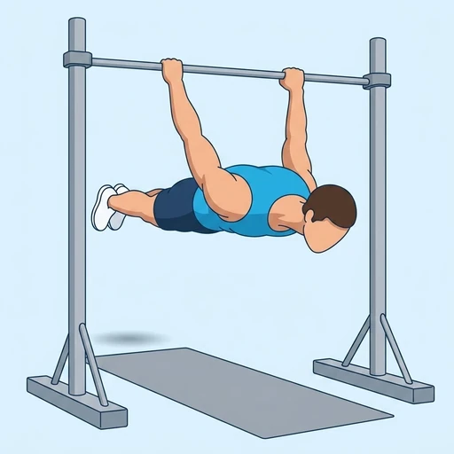
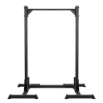

Back Lever
An advanced gymnastic isometric: hanging from a bar, the body is held horizontal and face-down in a straight line, demanding total-body tension through the lats, core, and posterior chain.
Full body · Pull-Up Bar · Advanced

Muscles worked by the Back Lever
Primary
Secondary
Also called: erector spinae, spinal erectors, lower back muscles, back extensors, lats, lat.
Equipment

Pull-Up BarAlso called: chin-up bar, chin up bar, power tower, pull up bar, doorway bar.
How to do the Back Lever
- Hang from a bar with an overhand grip and rotate backward through the arms until inverted.
- Lower the body forward and down until it is horizontal, facing the floor.
- Keep the arms straight and the whole body in one rigid line from head to heels.
- Brace the core and squeeze the glutes so the hips and shoulders do not sag.
- Hold for time, then rotate back up under control.
Form tips
- Build up with tucked and one-leg progressions before the full straight-body lever.
- Depress and retract the shoulder blades to protect the shoulders.
- Stay rigid -- any pike or arch collapses the hold.
At a glance
| Body part | Full body |
|---|---|
| Category | Strength |
| Force type | Static |
| Mechanic | Compound |
| Difficulty | Advanced |
| Equipment | Pull-Up Bar |
| Goals | Strength |
| MET | 6.0 (metabolic equivalent, for calorie estimates) |
| Unilateral | No |
| Bodyweight | No |
| Dataset id | back-lever |
Back Lever in German & Spanish
| German | Back Lever |
|---|---|
| Spanish | Back lever |
Descriptions, instructions and tips ship in all three languages in the JSON.
Related exercises
Exercise data (JSON)
The record below is exactly what exercises.json ships for this exercise — names, descriptions, instructions and tips in English, German and Spanish.
{
"id": "back-lever",
"name_en": "Back Lever",
"name_de": "Back Lever",
"name_es": "Back lever",
"description_en": "An advanced gymnastic isometric: hanging from a bar, the body is held horizontal and face-down in a straight line, demanding total-body tension through the lats, core, and posterior chain.",
"description_de": "Ein fortgeschrittener turnerischer Haltekraftakt: Im Hang an einer Stange wird der Körper waagerecht und mit dem Gesicht nach unten in einer geraden Linie gehalten und fordert Ganzkörperspannung über Lat, Rumpf und hintere Kette.",
"description_es": "Un isométrico gimnástico avanzado: colgado de una barra, el cuerpo se mantiene horizontal y boca abajo en línea recta, exigiendo tensión de todo el cuerpo a través de dorsales, core y cadena posterior.",
"category": "strength",
"force_type": "static",
"mechanic": "compound",
"difficulty": "advanced",
"equipment": "pull_up_bar",
"body_part": "full_body",
"primary_muscles": [
"erector_spinae",
"latissimus_dorsi"
],
"secondary_muscles": [
"anterior_deltoid",
"gluteus_maximus",
"rectus_abdominis"
],
"goals": [
"strength"
],
"is_unilateral": false,
"is_bodyweight": false,
"instructions_en": [
"Hang from a bar with an overhand grip and rotate backward through the arms until inverted.",
"Lower the body forward and down until it is horizontal, facing the floor.",
"Keep the arms straight and the whole body in one rigid line from head to heels.",
"Brace the core and squeeze the glutes so the hips and shoulders do not sag.",
"Hold for time, then rotate back up under control."
],
"instructions_de": [
"Hänge dich mit Obergriff an eine Stange und rotiere rückwärts durch die Arme, bis du kopfüber bist.",
"Senke den Körper nach vorne und unten, bis er waagerecht ist und das Gesicht zum Boden zeigt.",
"Halte die Arme gestreckt und den ganzen Körper in einer starren Linie von Kopf bis Fuß.",
"Spanne den Rumpf an und drücke die Gesäßmuskeln zusammen, damit Hüfte und Schultern nicht absacken.",
"Halte die Position auf Zeit und rotiere dann kontrolliert wieder hoch."
],
"instructions_es": [
"Cuélgate de una barra con agarre prono y rota hacia atrás a través de los brazos hasta quedar invertido.",
"Baja el cuerpo hacia delante y abajo hasta que quede horizontal, con la cara hacia el suelo.",
"Mantén los brazos rectos y todo el cuerpo en una línea rígida de la cabeza a los pies.",
"Aprieta el core y los glúteos para que la cadera y los hombros no se hundan.",
"Mantén la posición el tiempo deseado y rota de nuevo hacia arriba de forma controlada."
],
"tips_en": [
"Build up with tucked and one-leg progressions before the full straight-body lever.",
"Depress and retract the shoulder blades to protect the shoulders.",
"Stay rigid -- any pike or arch collapses the hold."
],
"tips_de": [
"Baue die Übung mit angehockten und einbeinigen Vorstufen auf, bevor du den vollen gestreckten Lever versuchst.",
"Senke und ziehe die Schulterblätter zusammen, um die Schultern zu schützen.",
"Bleib starr — jedes Einknicken oder Hohlkreuz bringt die Haltung zum Kollabieren."
],
"tips_es": [
"Progresa con variantes agrupadas y a una pierna antes de intentar el lever completo con el cuerpo recto.",
"Deprime y retrae las escápulas para proteger los hombros.",
"Mantente rígido: cualquier flexión o arqueo colapsa la postura."
],
"met": 6.0,
"images": {
"flat": {
"main": "images/flat/back-lever-main.webp"
}
}
}Fetch just this exercise
const { exercises } = await fetch(
"https://exercise-dataset.com/exercises.json"
).then(r => r.json());
const ex = exercises.find(e => e.id === "back-lever");Free for personal and commercial in-app use with attribution (“Exercise data by RepDB”) — see the license and ready-made attribution snippets. Redistributing the data as a dataset or API is not permitted.